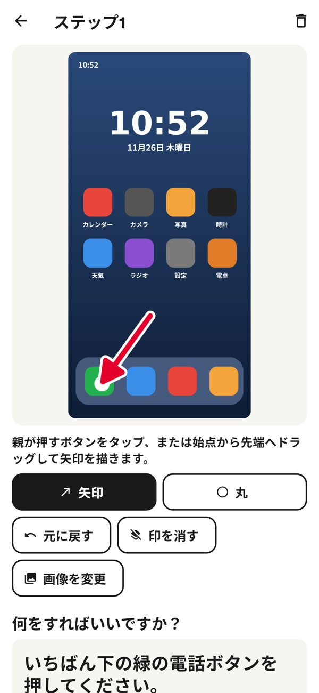
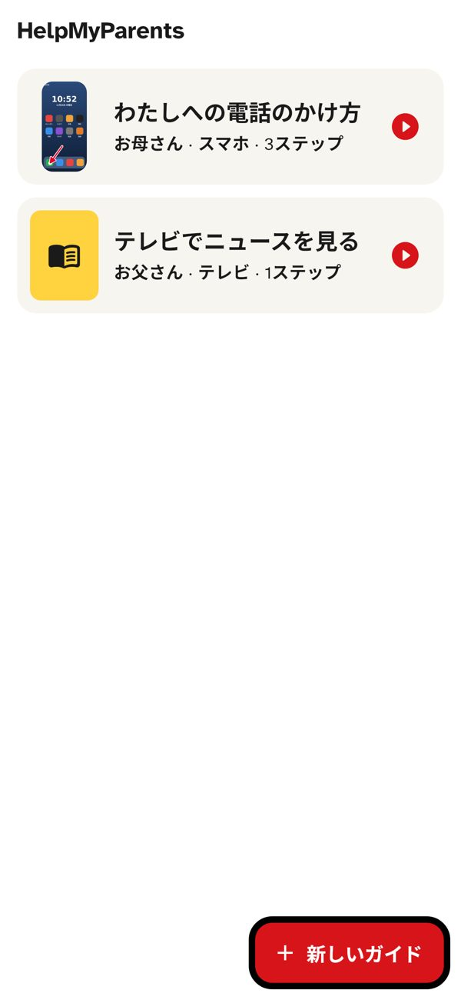
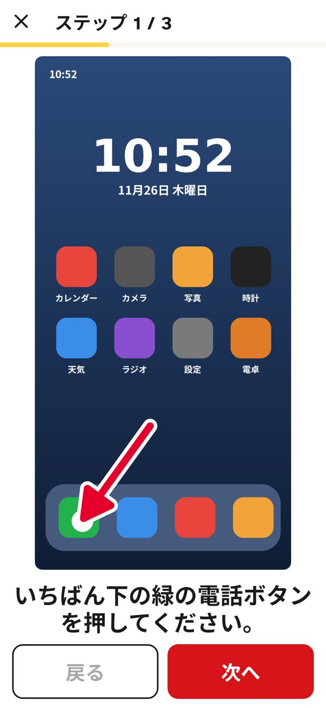

同じ説明を何度もくり返すのは、もう終わり。
スクリーンショットに大きな赤い矢印と短い言葉を加えて、手順書に。親がひとりで、自分のペースで見られます。
App Store と Google Play で近日公開
使い方
- スクリーンショットを追加、またはテレビやパソコンの画面を撮影。
- 押してほしい場所をタップすると、大きな赤い矢印が表示。
- 各ステップに大きな文字で短い一文を入力。
- 印刷用のPDF、またはLINE・メッセージ・メール用の画像として送信。


シニアのために
とても大きな文字、1画面に1ステップ、大きな「戻る」「次へ」ボタン。
できあがりの説明書
ビデオ通話、電話に出る、文字を大きくする、テレビの字幕などの説明書から始められます。
プライバシー
説明書はスマホの中だけに保存。アカウント不要、広告なし、追跡なし。
オフラインで使える
インターネットなしで作成・表示。PDFを印刷してテレビの横に。
料金
最初の説明書は無料。HelpMyParents Plus で説明書を無制限に作成：7日間無料、その後月額800円。ストアの設定からいつでも解約できます。
サポート・お問い合わせ
ご質問やご意見はメールでどうぞ。すべてのメールにお返事します。
parentshelpmy@gmail.com